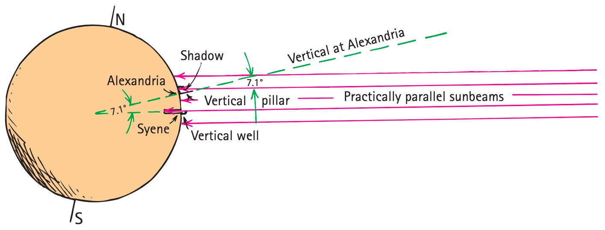

Thinking Like a Physicist
Learning Target: Students will explain how physics uses observation, measurement, evidence, models, and testable claims to understand the natural world.
I Can Statements
- I can distinguish between an observation, inference, hypothesis, law, and theory.
- I can explain why a claim must be testable to be scientific.
- I can use evidence from a short scenario to decide whether a physics explanation is supported and explain why formulas in physics are guides for thinking, not just tools for calculation.
Skim the Section
Skim the headings and figures. Write one thing you already know about this topic and one question you have.
| I already know… | |
|---|---|
| I wonder… |
Vocabulary Preview
observation, inference, hypothesis, scientific law, scientific theory, evidence, model, testable claim
Prior-knowledge sort: Place each term where it belongs based on what you know before reading.
| I know it | I’ve seen it | New to me |
|---|---|---|
What’s to Come
Preview the situation before solving.
Mark the givens, the representation, and the relationship each part will need.
| Release height (cm) | Roll distance (cm) |
|---|---|
| 5 | 42 |
| 10 | 71 |
| 15 | 96 |
| 20 | 124 |
Measurements, observations, and models
Physics begins with what can be observed and measured, but measurements do not explain themselves. An observation records what was directly noticed or measured. An inference is a conclusion built from those observations plus reasoning or a model.
Eratosthenes used the length of a shadow, the distance between two locations, and a geometric model of Earth to reason about Earth’s size. The shadow and distance were measurements; the conclusion about Earth’s circumference required a model. This is a useful pattern for physics: evidence constrains an explanation, while a model helps connect the evidence to a claim.

Example
| Time (min) | Ball temperature (°C) |
|---|---|
| 0 | 20 |
| 1 | 23 |
| 2 | 25 |
| 3 | 27 |
You Try It
| Measurement | Speed (m/s) |
|---|---|
| initial | 0.4 |
| later | 0.7 |
Using the measurement figure, identify one direct observation/measurement and one conclusion that requires reasoning beyond what was directly seen.
Equations are relationships
Physics equations compress relationships among quantities. For example, average speed connects distance traveled with the time required. Before inserting numbers, read the relationship: covering the same distance in less time means a greater average speed. An equation is most useful when it helps you predict how one quantity should change when another changes.
Example
You Try It
How scientific investigations work
There is no single rigid scientific recipe. Investigations often include a question, a possible explanation or hypothesis, a prediction, a test, and evidence. The important feature is that observations can be used to evaluate the idea. Scientists may revise the question, model, or method as new evidence appears.
From evidence to explanations
A hypothesis is a tentative, testable explanation. A scientific law summarizes a reliable pattern or relationship in nature; a scientific theory is a broad, well-supported explanatory framework. Laws and theories do different jobs—one does not simply “graduate” into the other. Both remain accountable to evidence.
Evidence can support an explanation without proving it for all time. Strong scientific reasoning asks which claim is better supported by the available observations and whether new evidence could change that conclusion.
Example
| Stretch length (cm) | Launch distance (m) |
|---|---|
| 2 | 0.7 |
| 4 | 1.3 |
| 6 | 2.0 |
You Try It
| Release angle | Period (s) |
|---|---|
| 10° | 1.42 |
| 20° | 1.41 |
| 30° | 1.43 |
Testable claims
A scientific claim must be testable in principle: there must be some observation or measurement that could count against it if the claim were wrong. A claim that cannot be connected to any possible measurement may be meaningful in another context, but it cannot be evaluated scientifically as stated.
Example
You Try It
Vocabulary
| observation | information directly noticed or measured |
|---|---|
| inference | a conclusion drawn from observations plus reasoning |
| hypothesis | a tentative explanation that can be tested |
| scientific law | a concise statement or relationship that describes a repeatedly observed pattern |
| scientific theory | a broad, well-supported explanation that organizes evidence and tested ideas |
| evidence | observations, measurements, or data used to evaluate a claim |
| model | a simplified representation used to describe, explain, or predict a system |
| testable claim | a claim that can be checked with observations or measurements and could be contradicted by evidence |
Summary
- Measurements and observations provide evidence; inferences and models interpret that evidence.
- Hypotheses, laws, and theories have different roles and remain accountable to evidence.
- Scientific claims must be testable in principle.
- Equations describe relationships among physical quantities and should guide reasoning before calculation.
What I Figured Out
Common Mistakes
| Watch for this | Repair / note |
|---|---|
| Treating an inference as a direct observation. | |
| Assuming a plausible-sounding claim is scientific without a possible test. | |
| Using law and theory as if one simply “graduates” into the other. | |
| Treating a formula as a calculation recipe with no physical meaning. |